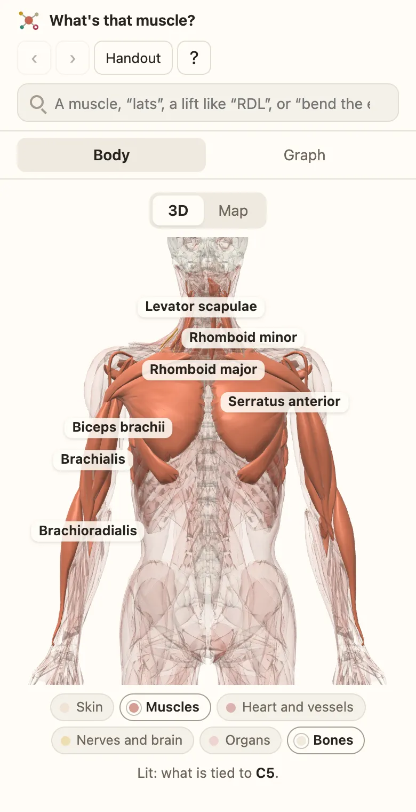
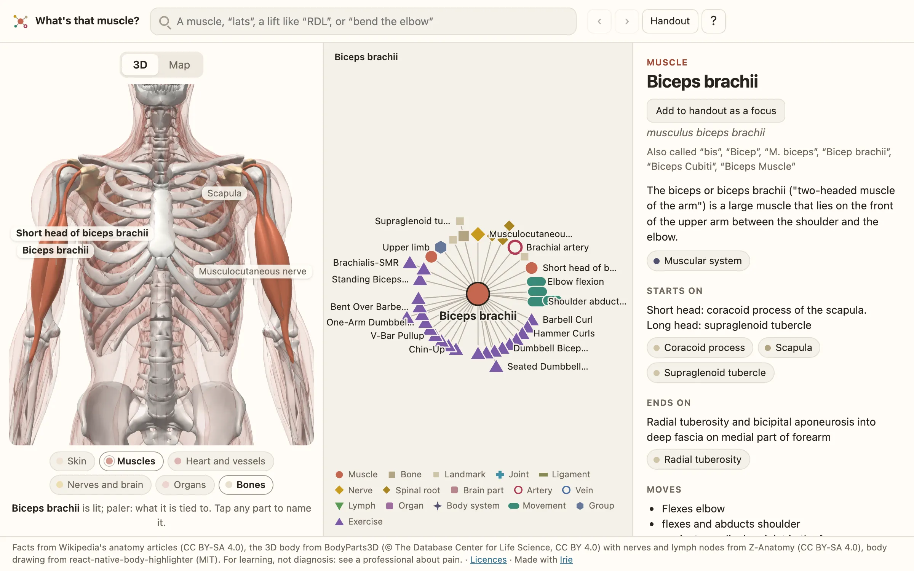
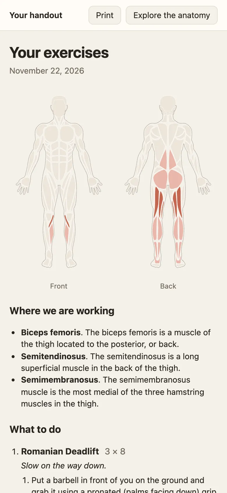

Live prototype
What’s that muscle?
Point at the body and it names the muscle. Then walk anatomy as a graph, and see it in 3D.
Tap a spot, or type “lats”, “rdl” or “it hurts when I bend my elbow”, and it names the muscle, the lift or the movement. Then follow the ties: the bones a muscle starts and ends on, its nerve and spinal roots, where its blood comes from, what it moves, and the exercises that work it.
For learning, not diagnosis. It runs in your browser, on a phone or a computer, with no account and nothing to install.

The app
The body, the graph and the facts, side by side
Pick something anywhere, and the rest follows: the body lights it, the graph turns around it, and the card gives its facts, each linked to the Wikipedia revision it came from. On a phone, the body and the graph are two tabs.

Who it’s for
Clinics, and the people they train
Anatomy is a graph already: a muscle hangs between two bones, takes orders from a nerve, gets blood from an artery, and moves a joint that other muscles move too. Here you can follow those ties.
- Physios and trainers Show a client the muscle and the exercises for it, then send them home with a handout.
- People who train What does this lift hit, and what does this stretch reach? Pick an exercise and the body shows what it works.
- Students Physio, massage, nursing, medicine and personal training students learn each muscle’s origin, insertion, nerve and action. Here, that table is a graph you can walk.
How it works
Point, follow, look, hand over
-
Point or ask
Tap the body, or type a muscle, a nickname (“lats”, “traps”), a lift (“rdl”, “bench”) or a movement in plain words (“bend the elbow”). It names what you mean.
-
Follow the ties
Click any dot and the graph turns around it: from the biceps to its nerve, to the spinal root C5, to every muscle C5 reaches. Back and forward work as in a browser.
-
Look in 3D
Turn the body, zoom in and peel it layer by layer: skin, muscles, heart and vessels, nerves and brain, organs, bones. Tap any of its 2,723 parts to name it.
-
Hand it over
Add the muscles to work on and the exercises to do, with a dose and a note for each. Then print the handout, or send it as a link.
For physios and trainers
A handout your client can take home
Gather what you showed in the session: the muscles to work on, the exercises and stretches, a dose and a note for each. Your client gets one page: the body lit where the work is, the muscles in plain words, and each exercise with its steps.
- On paper. Print it, or save it as a PDF.
- As a link. The handout travels inside the link itself, after the #, the part a browser never sends to a server. Your client opens it on their phone and sees only their handout.
- No client data kept. Nothing is stored anywhere but the link and your own browser, and the client’s name never goes into the link.

Where it stands
Live as a prototype, with clinics next
Works today
About 5,000 things, from muscles, bones and joints to nerves, vessels, organs and exercises, across the body’s 11 systems, with some 14,000 ties between them. The 3D body, each of its 2,723 parts tied to the graph. 876 exercises and stretches, tied to the muscles they work. Handouts, printed or sent as links. It passes automated accessibility checks (WCAG 2.2 AA) in light and dark, on desktop and phone.
Next
Seats for clinics, with a licence key rather than accounts, and your clinic’s own logo on the printout. In 3D, a female body (both open 3D sources are male) and a cut-away view.
Planned
A quiz and spaced repetition for students, Gray’s 1918 plates beside each card, and an iPhone app. And the anatomy graph as the public showcase of Mycylic, our graph software, once Mycylic can carry it.
Open data
Built from open data, and credited
Every fact links back to where it came from, so you can check it there.
- Anatomy facts
- Wikipedia’s anatomy articles, under CC BY-SA 4.0. Each card links the article revision its facts came from, and the data stays share-alike.
- The 3D body
- BodyParts3D, © The Database Center for Life Science, under CC BY 4.0, with the nerves of the trunk and limbs and the lymph nodes from Z-Anatomy, under CC BY-SA 4.0.
- Exercises and stretches
- free-exercise-db, in the public domain.
- The flat body map
- react-native-body-highlighter, under the MIT license.
- This page’s screenshots
- Shared under CC BY-SA 4.0, with the credits above. The app lists every licence in its licences file.
Questions
What people ask first
- Does it diagnose pain?
- No. It is for learning, not diagnosis: it names the parts of the body and how they connect, and never says what is wrong with anyone. For pain, see a professional.
- Where does my client’s information go?
- Nowhere but the link and your browser. A handout sent as a link carries itself after the #, which a browser never sends to a server, and the client’s name never goes into it. A handout you are still putting together stays in your own browser.
- Do I need an account, or to install anything?
- No. It is one web page that runs in the browser on a phone or a computer, with no sign-in. Once it has loaded, it works without a connection.
- Where do the facts come from?
- From Wikipedia’s anatomy articles. Each card links the revision its facts came from, so you can check them there.
- What will it cost?
- The price isn’t set yet. The plan is a price per seat for clinics; until then, the prototype is open to try.
More from CLI ’n’ Amen co.
-
Open source · version 1.0
Irie
The app our agents run in: every AI coding agent you have, side by side in one calm view. Free, for Mac and Linux.
-
In development
Canopy
One checkout on a vendor’s phone for every way a customer pays, and one ledger at closing. For market stalls and food trucks.
-
In development
Mycylic
Graphs you make, walk through and see, with every version on a blockchain. First up: who holds a token, and where it moves.
Want it for your clinic?
Tell us how you’d use it with your clients. We reply within one business day.